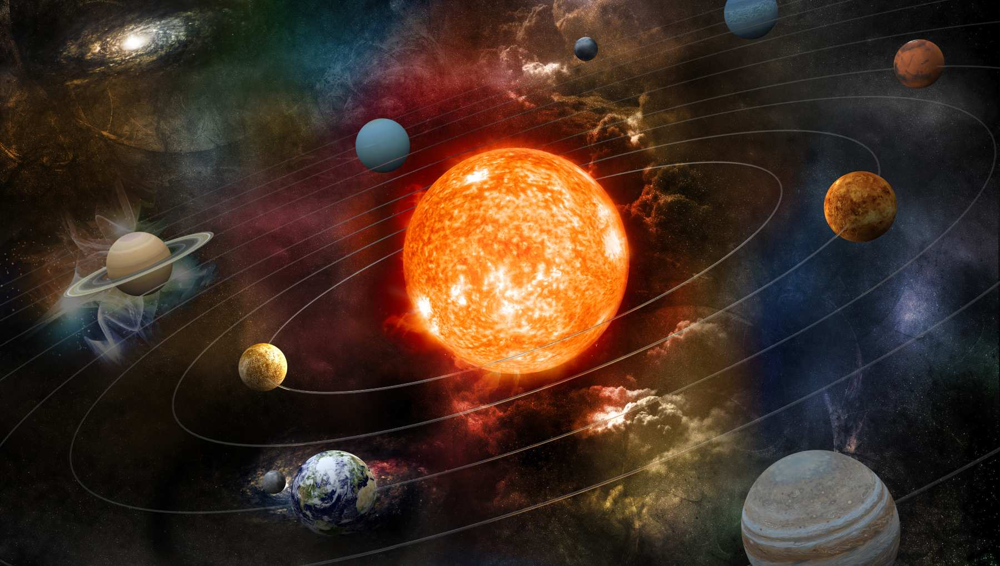

El sistema solar es un sistema estelar que alberga ocho fascinantes mundos. es el sistema gravitacionalmente unido del Sol y los objetos que orbitan alrededor de él. Se formó hace unos 4.600 millones de años cuando una región densa de una nube molecular colapsó, formando el Sol y un disco protoplanetario . El Sol es una estrella típica que mantiene un equilibrio equilibrado mediante la fusión de hidrógeno en helio en su núcleo , liberando esta energía de su fotosfera exterior . Los astrónomos lo clasifican como una estrella de secuencia principal de tipo G.

Planetas
Los objetos más grandes que orbitan alrededor del Sol son los ocho planetas. En orden desde el Sol, son cuatro planetas terrestres ( Mercurio , Venus , Tierra y Marte ); dos gigantes gaseosos ( Júpiter y Saturno ); y dos gigantes de hielo ( Urano y Neptuno ). Todos los planetas terrestres tienen superficies sólidas. Inversamente, todos los planetas gigantes no tienen una superficie definida, ya que están compuestos principalmente de gases y líquidos.
Características
el Sistema Solar tiene al menos nueve planetas enanos : Ceres , Orcus , Plutón , Haumea , Quaoar , Makemake , Gonggong , Eris y Sedna . Hay una gran cantidad de cuerpos pequeños del Sistema Solar , como asteroides , cometas , centauros , meteoroides y nubes de polvo interplanetarias . Algunos de estos cuerpos se encuentran en el cinturón de asteroides (entre la órbita de Marte y Júpiter) y el cinturón de Kuiper (justo fuera de la órbita de Neptuno).Seis planetas, siete planetas enanos y otros cuerpos tienen satélites naturales en órbita , que comúnmente se denominan "lunas".
Exploración
A lo largo de los años, diversas misiones han explorado esta galaxia.En el siglo XX, los humanos comenzaron su exploración espacial alrededor del Sistema Solar, comenzando con la colocación de telescopios en el espacio desde la década de 1960. Para 1989, los ocho planetas habían sido visitados por sondas espaciales. Las sondas han devuelto muestras de cometas y asteroides, así como también han volado a través de la corona del Sol [ y han visitado dos planetas enanos ( Plutón y Ceres ). Para ahorrar combustible, algunas misiones espaciales hacen uso de maniobras de asistencia gravitatoria , como las dos sondas Voyager que aceleran cuando sobrevuelan planetas en el Sistema Solar exterior y la sonda solar Parker que desacelera más cerca del Sol después de sobrevolar Venus.